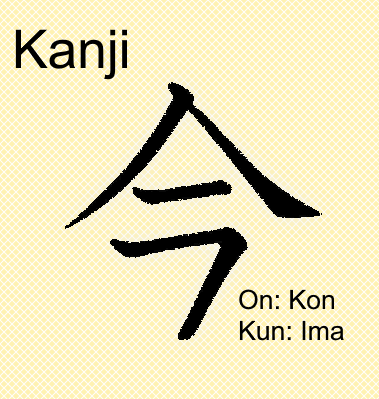

Kanji to system znaków którego używa się głównie do pisania i jest to chiński zapis w języku japońskim. Bardzo częsty.

{kind=link}
Rekomendowane jest nauczyć się podstawowych Kanji. Moje to 200 i później zostawiłem. Ogółem nie musisz umieć czytać by Słuchać i Rozmawiać, a to najważniejsze.
Kanji ogólnie posiada dwie wersje czytane. Jeżeli nie zamieżasz się uczyć wszystkich potrzebnych ani zdawać certyfikatów, podstawowe 200 samo powinno wystarczyć do zapamiętywania. Musisz jednak pamiętać, że Kanji mają dwie wersje czytane nazwane On i Kun. On to wersja chińska a Kun to wersja Japońska.
Sam w momencie tworzenia strony nie wiem czym jest wymowa Kon tego Kanji ale wiem że wymowa Ima oznacza "Teraz". W większości przypadków prawdopodobnie powinieneś się skupić na wersji japońskiej i na zapamiętywaniu znaczenia kanji niż spamiętywaniu perfekcyjnego czytania, ale to tylko moja opinia.
言語 - Gengo - Język
げんご - Hiragana
Furigana to hiragana ale malutka postawiona nad lub pod Kanji aby pokazać jak się je czyta.